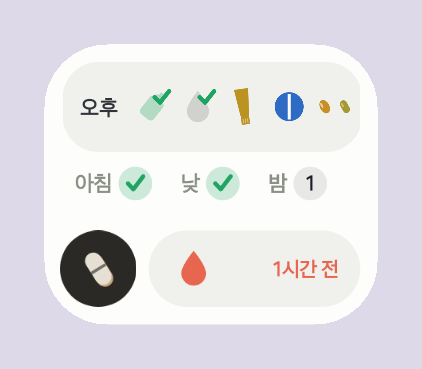
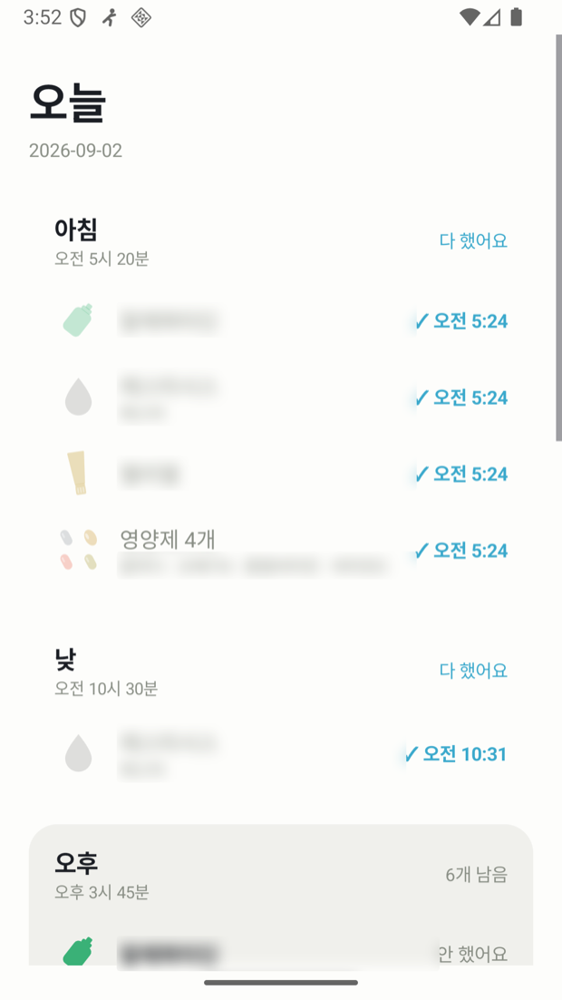
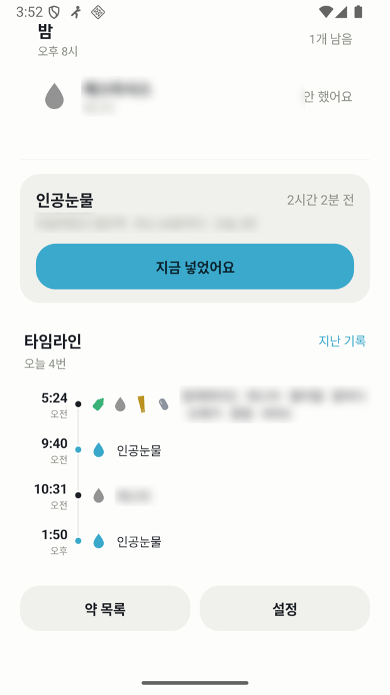
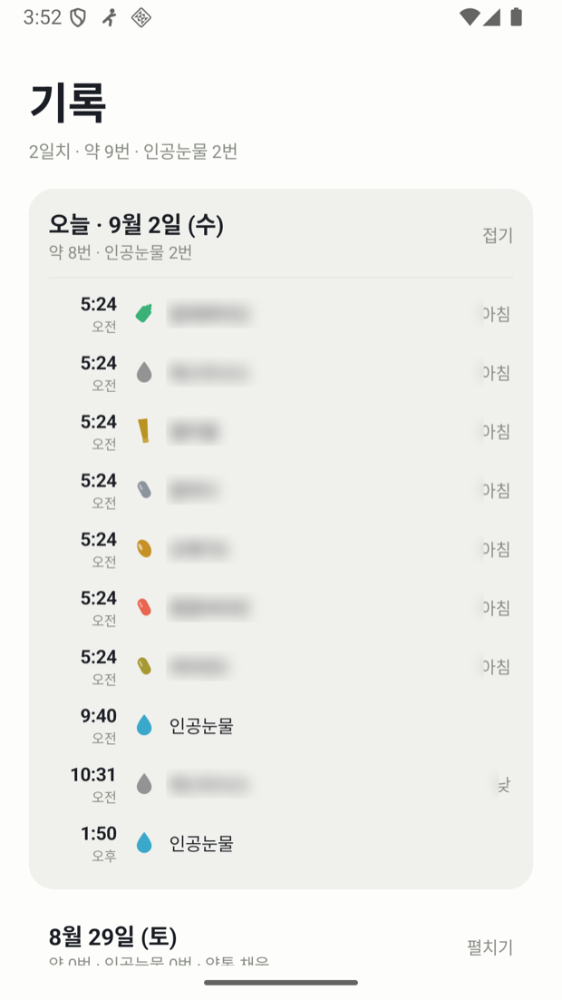
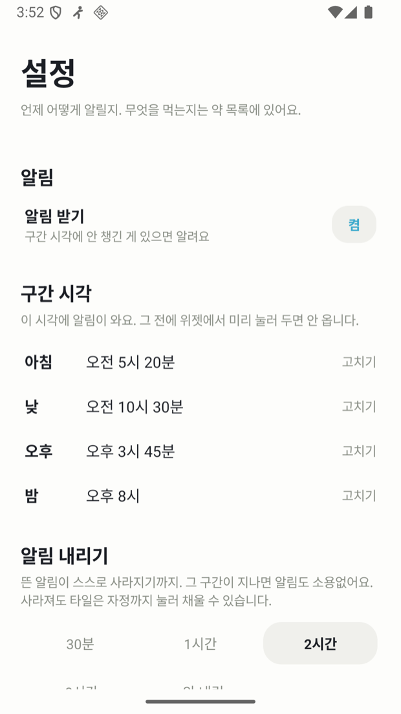
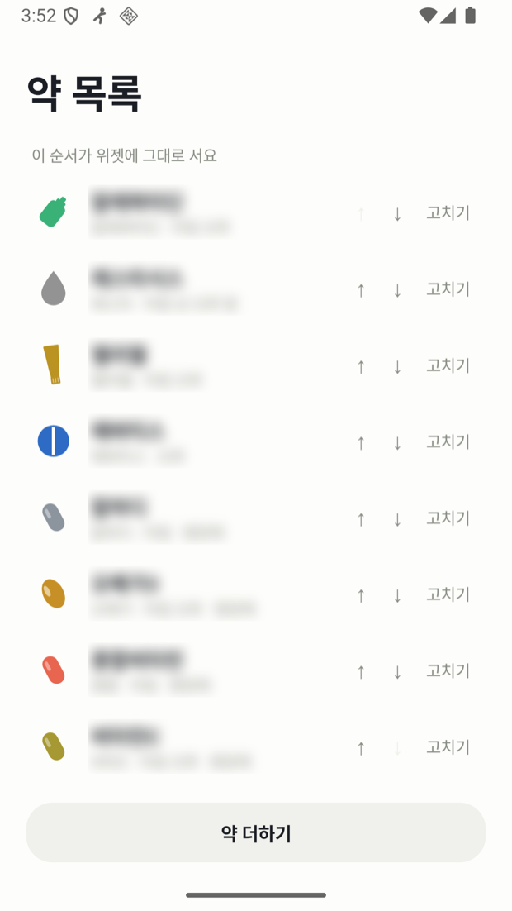

왼쪽은 dev.sungd.uk/pillbox 지금 그대로다. 오른쪽은 같은 글과 같은 그림에 원티드 출품작 판에서 뽑은 주석 기법만 얹었다 — 번호 뱃지, 라벨 칩과 인출선, 줌 콜아웃, 들어올리기, 반반 판.
바탕색과 글꼴은 양쪽 다 지금 사이트 그대로 뒀다. 달라지는 것이 그림 기법 하나뿐이어야 견줄 수 있다.
하루 알림 4번, 지우면 남는 기록 0.
체크가 곧 알림 해제. 미리 체크한 구간은 알림 없음, 확인은 홈 화면 위젯에서 끝.

먹는 약 셋, 영양제 넷, 아침저녁 처방 안약, 바르는 연고, 수시로 넣는 인공눈물.
현재 구간의 약은 제형 아이콘, 나머지 세 구간은 체크 또는 남은 개수. 앱을 열지 않고 «지금 구간이 끝났나» 만 확인.
미리 체크한 구간은 알림 없음. 놓친 구간에만 한 번, 알림에서 바로 체크.





하루 알림 4번, 지우면 남는 기록 0.
체크가 곧 알림 해제. 미리 체크한 구간은 알림 없음, 확인은 홈 화면 위젯에서 끝.
반반 판 숫자를 따로 세우지 않고 그림 옆에 붙였다. Hero 한 덩이 + Fig 한 장이 한 칸이 된다.
번호 뱃지 · 들어올리기 지금은 이 셋을 캡션 한 문장에 몰아 적었다. 번호를 붙이면 그림을 보면서 읽게 된다. 파란 테두리는 「지금 구간」 줄만 띄운 것.
먹는 약 셋, 영양제 넷, 아침저녁 처방 안약, 바르는 연고, 수시로 넣는 인공눈물.
줌 콜아웃 · 라벨 칩 폰 캡처는 글자가 작아 「다 했어요」도 「오전 5:24」도 안 읽힌다. 키우는 대신 그 조각만 네 배로 끌어냈다.
제목 형식 라벨을 <이름> — <하는 일 한 문장> 으로. 「설정 · 알림 시각과 방식」은 화면 이름이고, 「네 구간의 시각과 알림 방식을 바꾼다」는 거기서 무엇을 하는지다.
「0회」만 먼저 떼어 놓으면 견줄 기준이 없어 해석에 시간이 걸린다. 위 오른쪽 판의 칩이 그렇게 돼 있어 지금 Hero(뜻을 위에, 값을 아래)보다 오히려 나빠졌다. 같은 숫자 셋을 네 가지로 놓아 봤다.
값이 크고 뜻이 작다. 눈이 숫자에 먼저 닿는데 그 숫자가 무엇의 값인지를 그다음에 읽는다.
별로 — 「0회」가 무엇의 0인지 알려면 아래 줄을 읽고 다시 올라와야 한다.
읽는 순서를 뒤집는다. 줄마다 왼쪽이 뜻, 오른쪽 끝이 값이라 눈이 왼쪽에서 오른쪽으로 한 번만 간다.
값이 한 열에 줄 맞춰 서서 견주기 쉽다. 「줄 맞춰 나란히」 성향과 맞는다.
숫자 하나로는 기준이 없다. 그 앞에 무엇이었는지를 같이 놓으면 크기가 저절로 읽힌다.
가장 빨리 읽힘 — 다만 셋째는 견줄 앞 값이 없다. 없는 것을 지어내면 안 되니 그 줄만 B 꼴로 둔다.
숫자 칸을 아예 없애고 본문 문장 안에 넣는다. 세리프 본문이라 읽는 흐름이 안 끊긴다.
미리 체크해 두면 그 구간에는 알림이 한 번도 안 온다. 하루 네 번 오던 것이 놓친 구간에만 한 번으로 준다.
위젯은 홈 화면에서 2×1 — 처음 4×3 이던 것을 세 번에 걸쳐 줄였다.
인공눈물은 위젯 띠를 두 번 탭하면 기록된다. 오터치를 막으려고 4초 안에 두 번이다.
가장 자연스럽지만 훑어보는 사람에겐 안 잡힌다. 개발기처럼 끝까지 읽는 판에 맞는다.
⚠ 이건 위 반반 판만의 문제가 아니다. 지금 26편이 다 쓰는 Hero·Nums 가 값을 크게 위에 두고 뜻을 작게 아래 두는 꼴이라, 고르면 그 컴포넌트를 고치고 전부 되돌려 적용해야 한다.
| 자리 | 지금 | 고친 판 |
|---|---|---|
| 위젯 그림 | 캡션 한 문장에 세 가지를 몰아 적음 — 그림을 보면서 읽을 수가 없다 | 번호 셋으로 갈라 그림 옆에. 「지금 구간」 줄만 테두리로 띄움 |
| 숫자 | Hero 한 덩이 + 그림 한 장이 세로로 따로 선다 | 반반 판 하나로 합쳐 숫자와 그림이 한 눈에 |
| 폰 캡처 | 글자가 작아 「다 했어요」도 「오전 5:24」도 안 읽힘 | 그 조각만 네 배로 끌어내 옆에. 캡션이 아니라 그림이 설명한다 |
| 화면 넷 라벨 | 「설정 · 알림 시각과 방식」 — 화면 이름과 항목 나열 | 「설정 — 네 구간의 시각과 알림 방식을 바꾼다」 — 거기서 무엇을 하는지 |
| 절 제목 | 「주요 기능」 · 「화면」 — 목차만 보면 내용을 모름 | 「구간 알림 — 미리 체크한 구간엔 안 온다」 — 제목이 이미 답이다 |
| 기법 | 어떻게 만드나 | 품 |
|---|---|---|
| 번호 뱃지 | 그림 위에 % 좌표로 얹는 컴포넌트 하나. 캡처는 그대로 | 컴포넌트 한 번, 편마다 좌표 서너 줄 |
| 라벨 칩 + 인출선 | 같은 컴포넌트에 칩과 점선을 더함 | 위와 같이 |
| 줌 콜아웃 | 같은 파일을 background-position 으로 잘라 확대. 새 캡처가 필요 없다 | 자리 잡는 데 한 그림에 5분 |
| 들어올리기 | 테두리 상자 하나 | 거의 없음 |
| 제목 형식 | 글만 고친다 | 편당 10분, 26편 |